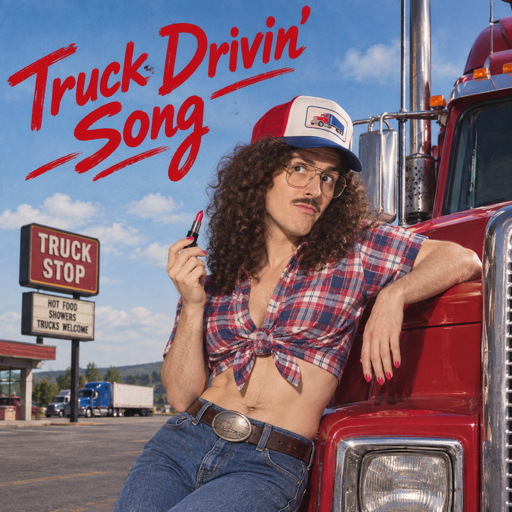

Imagem gerada por inteligência artificial
“Truck Drivin' Song” é uma paródia de estilo do country tradicional sobre caminhoneiros, contando a história de um motorista de caminhão que, enquanto trabalha na estrada, também se preocupa constantemente com suas roupas, maquiagem e seus hábitos de se vestir de maneira feminina. A música possui um tema semelhante ao de “The Lumberjack Song”, do Monty Python, que também brinca com um personagem que esconde ou revela tendências de cross-dressing. Para escrever a música, “Weird Al” Yankovic buscou inspiração no trabalho do cantor C. W. McCall, conhecido por suas músicas sobre caminhoneiros e a vida nas estradas.
A melodia e parte da letra apresentam uma forte semelhança com “Hello Mary Lou”, de Gene Pitney. Para conseguir uma voz mais grave e adequada ao personagem, Al contou que gravou os vocais logo pela manhã, quando a voz naturalmente tende a estar em um tom mais baixo. Com apenas 2 minutos e 27 segundos de duração, “Truck Drivin' Song” é uma das faixas mais curtas de Running with Scissors e se destaca justamente por combinar o tradicional universo das músicas de caminhoneiros com uma situação inesperada e absurda.
I'm drivin' a truck
Drivin' a big ol' truck
Pedal to the metal, hope I don't run out of luck
Rollin' down the highway until the break of dawn
Drivin' a truck with my high heels on
My diesel rig is northward bound
It's time to put that hammer down
Just watchin' as the miles go flyin' by
I'm ridin' twenty tons of steel
But it's sure hard to hold the wheel
While I'm waiting for my nails to dry
Oh, I always gotta check my lipstick in that rear view mirror
And my pink angora sweater fits so tight
I'm jammin' gears and haulin' freight
Well, I sure hope my seams are straight
Lord, don't let my mascara run tonight
Because I'm drivin' a truck
Drivin' a big ol' truck
Smokey's on my tail and my accelerator's stuck
Got these eighteen wheels-a-rollin' until the break of dawn
Drivin' a truck with my high heels on
Oh, I don't mind when my crotchless panties creep right up on me
And my nipple rings don't bother me too much
But when I hit those big speed bumps
My darling little rhinestone pumps
Keep slippin' off the mother-lovin' clutch
But still I'm drivin' a truck
Drivin' a big ol' truck
Headin' down the interstate, just tryin' to make a buck
Wearin' feather boas with sequins and chiffon
While I'm drivin' a truck with my high heels on
I'm drivin' a truck
Drivin' a truck
Got a load to carry and some eyebrows left to pluck
And I'm late for my appointment down at my hair salon
So I'll be drivin' a truck with my high heels on